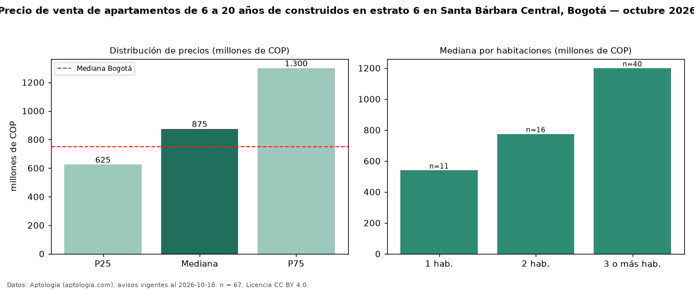

Precio de venta de apartamentos de 6 a 20 años de construidos en estrato 6 en Santa Bárbara Central, Bogotá — octubre 2026
En Santa Bárbara Central (localidad de Usaquén), Bogotá, la mediana de precio de venta de apartamentos de 6 a 20 años de construidos en estrato 6 es COP 875 millones, según 67 avisos vigentes. Prácticamente coincide con la mediana de los apartamentos en estrato 6 en venta de Santa Bárbara Central (COP 900 millones, n = 416); este segmento reúne el 16 % de esos avisos. Por metro cuadrado, la mediana es COP 8,07 millones/m² (n = 67), 19 % por encima de los apartamentos en estrato 6 en venta de Santa Bárbara Central (COP 6,78 millones/m²). El área mediana anunciada es 119 m². El segmento con más oferta es el de 3 o más habitaciones (40 avisos, mediana COP 1,20 mil millones); pasar de 1 habitación a 3 o más habitaciones cambia la mediana +122 %. La administración mediana declarada es COP 990.000 al mes (n = 66). La mitad central de los avisos va de COP 625 millones a COP 1,30 mil millones (razón 2,1), una dispersión alta. La mediana de todos los apartamentos en venta de Bogotá es COP 750 millones (+17 % de diferencia). Datos: Aptología (aptologia.com), CC BY 4.0 — https://www.aptologia.com/venta/bogota/santa-barbara-central. Archivos: PDF, CSV con las cifras y gráfica PNG.

| Avisos únicos | 67 |
|---|---|
| Percentil 25 | COP 625.000.000 |
| Mediana | COP 875.000.000 |
| Percentil 75 | COP 1.300.000.000 |
| Mediana por m² | COP 8.068.181 |
Fuente: avisos vigentes de portales inmobiliarios recopilados por Aptología, deduplicados (mínimo 30 avisos únicos por celda). Precios pedidos, no cerrados. Fecha: 2026-10-18.